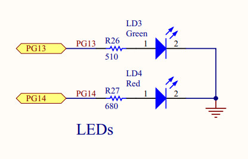
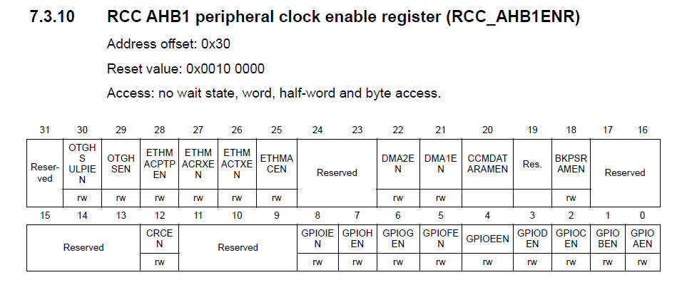
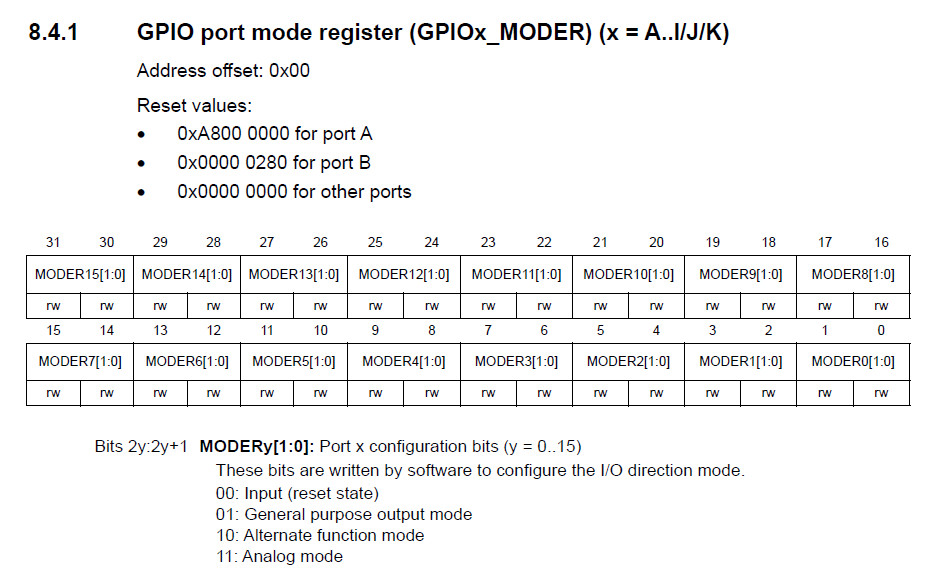
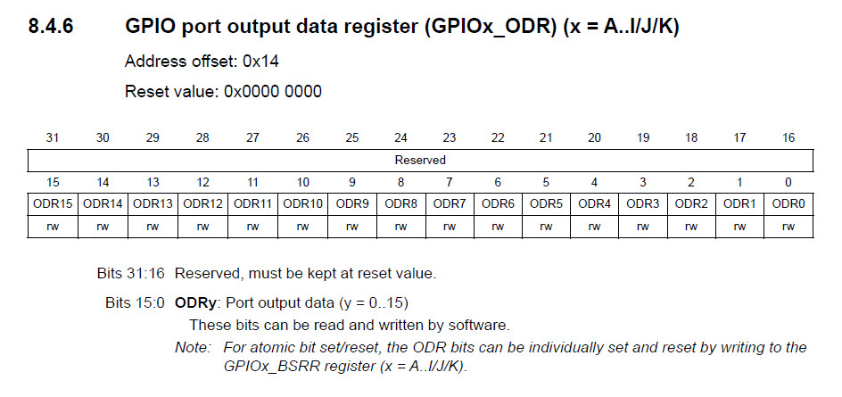
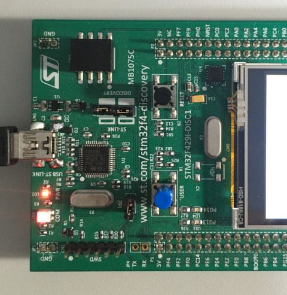
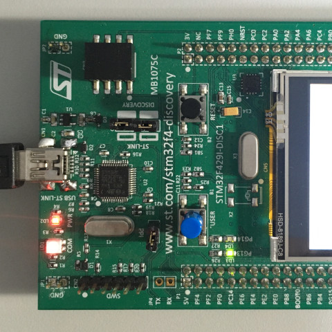

參考資訊：
https://www.st.com/resource/en/datasheet/dm00071990.pdf
https://www.st.com/resource/en/user_manual/dm00093903-discovery-kit-with-stm32f429zi-mcu-stmicroelectronics.pdf
https://www.st.com/resource/en/reference_manual/dm00031020-stm32f405-415-stm32f407-417-stm32f427-437-and-stm32f429-439-advanced-arm-based-32-bit-mcus-stmicroelectronics.pdf
LED測試使用PG-13




.equiv PORTG_BASE, 0x40021800
.equiv GPIO_MODER, 0x0000
.equiv GPIO_ODR, 0x0014
.equiv RCC_BASE, 0x40023800
.equiv RCC_AHB1ENR, 0x0030
.thumb
.cpu cortex-m4
.syntax unified
.global _start
.text
.org 0x0000
_start:
.word 0x20008000
.word reset
.org 0x0100
.thumb_func
reset:
ldr r0, =RCC_BASE
ldr r1, [r0, #RCC_AHB1ENR]
orr r1, #(1 << 6)
str r1, [r0, #RCC_AHB1ENR]
ldr r0, =PORTG_BASE
ldr r1, =(1 << 26)
str r1, [r0, #GPIO_MODER]
0:
eor r1, #(1 << 13)
str r1, [r0, #GPIO_ODR]
ldr r2, =0x200000
1:
subs r2, #1
bne 1b
b 0b
.end
main.ld
MEMORY {
RAM(xrw) : ORIGIN = 0x20000000, LENGTH = 128K
FLASH(xr ) : ORIGIN = 0x08000000, LENGTH = 128K
}
SECTIONS {
.text : { *(.text*) } > FLASH
.rodata : { *(.rodata*) } > FLASH
.bss : { *(.bss*) } > FLASH
}
Makefile
all: arm-none-eabi-as -mcpu=cortex-m4 main.s -o main.o arm-none-eabi-ld -T main.ld -o main.elf main.o flash: openocd -f /usr/local/share/openocd/scripts/interface/stlink.cfg -f /usr/local/share/openocd/scripts/target/stm32f4x.cfg -c "init; program main.elf; reset; exit;" clean: rm -rf main.o main.elf
編譯、燒錄
1. 短路JP3
2. 短路CN4
3. 連接MiniUSB至PC
4. 執行如下命令
$ make
arm-none-eabi-as -mcpu=cortex-m4 main.s -o main.o
arm-none-eabi-ld -T main.ld -o main.elf main.o
$ make flash
openocd -f /usr/local/share/openocd/scripts/interface/stlink.cfg -f /usr/local/share/openocd/scripts/target/stm32f4x.cfg -c "init; program main.elf; reset; exit;"
Open On-Chip Debugger 0.11.0-rc1+dev-00010-gc69b4deae-dirty (2020-12-27-01:20)
Licensed under GNU GPL v2
For bug reports, read
http://openocd.org/doc/doxygen/bugs.html
Info : auto-selecting first available session transport "hla_swd". To override use 'transport select '.
Info : The selected transport took over low-level target control. The results might differ compared to plain JTAG/SWD
Info : clock speed 2000 kHz
Info : STLINK V2J25M14 (API v2) VID:PID 0483:374B
Info : Target voltage: 2.885361
Info : stm32f4x.cpu: hardware has 6 breakpoints, 4 watchpoints
Info : starting gdb server for stm32f4x.cpu on 3333
Info : Listening on port 3333 for gdb connections
Info : Unable to match requested speed 2000 kHz, using 1800 kHz
Info : Unable to match requested speed 2000 kHz, using 1800 kHz
target halted due to debug-request, current mode: Thread
xPSR: 0x01000000 pc: 0x08000100 msp: 0x20008000
Info : Unable to match requested speed 8000 kHz, using 4000 kHz
Info : Unable to match requested speed 8000 kHz, using 4000 kHz
** Programming Started **
Info : device id = 0x20016419
Info : flash size = 2048 kbytes
Info : Dual Bank 2048 kiB STM32F42x/43x/469/479 found
** Programming Finished **
Info : Unable to match requested speed 2000 kHz, using 1800 kHz
Info : Unable to match requested speed 2000 kHz, using 1800 kHz
完成

